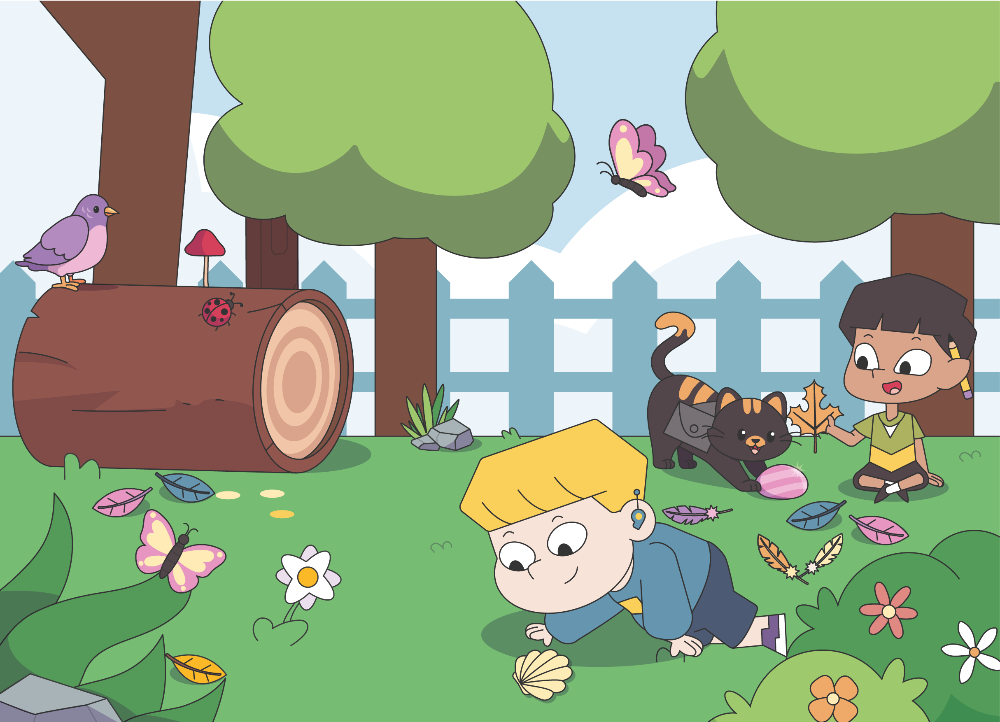
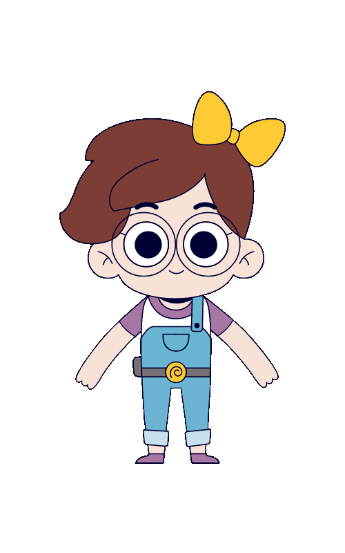
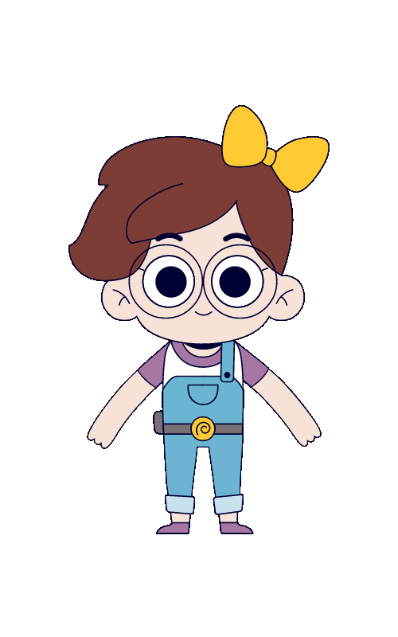

Mundo da Flor e dos Amigos

- Introdução ao clique, arrastar e soltar
- Montagem de blocos para formar sequências
- Desenvolve o raciocínio lógico inicial
Nossas trilhas transformam a curiosidade em superpoderes digitais. Com atividades lúdicas e desafios progressivos, cada passo é uma nova descoberta.
 

Cada trilha é uma jornada única. Explore os currículos e comece a aventura!
Os nossos mundos são organizados em trilhas coloridas. Cada etapa apresenta um foco de habilidade, com atividades curtas e comemoradas pelos personagens do AmadoPlay.
Primeiros cliques, arrastar e soltar, reconhecer padrões simples.
Quebra-cabeças com blocos, correção de ordem e histórias visuais.
Sequências numéricas, lógica básica e introdução a loops visuais.
Projetos guiados e desafios temáticos com metas criativas.